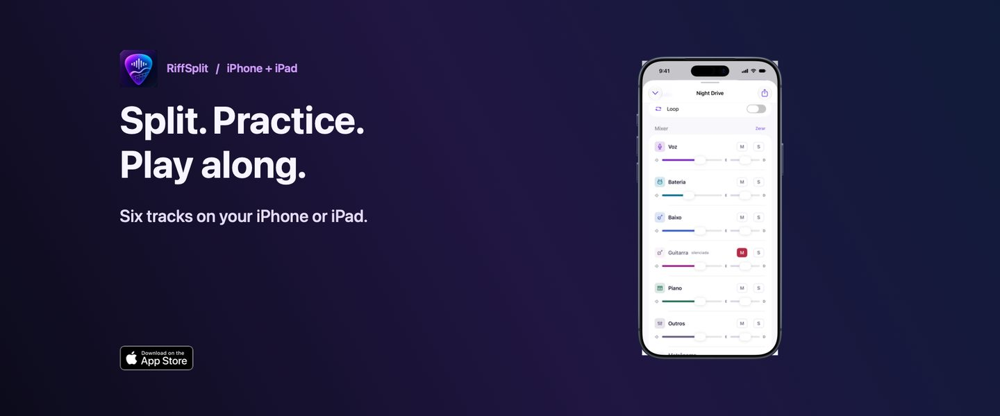

RiffSplit: split vocals, drums, bass and guitar from any song, offline
A music practice app for iPhone, iPad and Mac. Isolate your instrument, learn your part, slow down a solo and change the key, all on your device, with no account and no subscription.

What you can do
Free download, one-time unlock
The free version separates 30 seconds of each song. A one-time in-app purchase unlocks full songs and export on iPhone, iPad and Mac with the same Apple Account. No subscription.
Streaming songs (Spotify, Apple Music) are DRM protected and cannot be opened by any app. Use your own files or files you have the right to use.